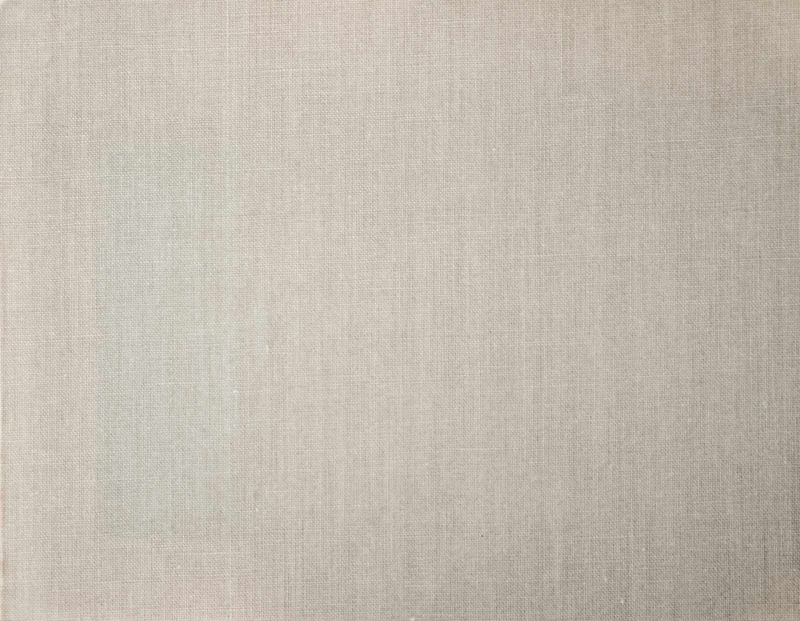
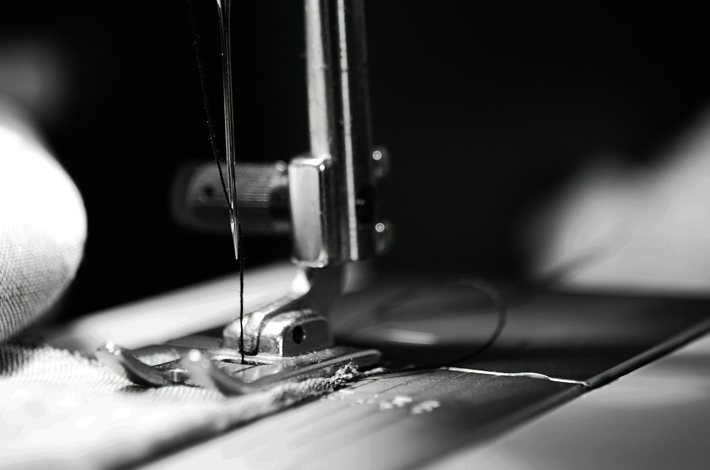
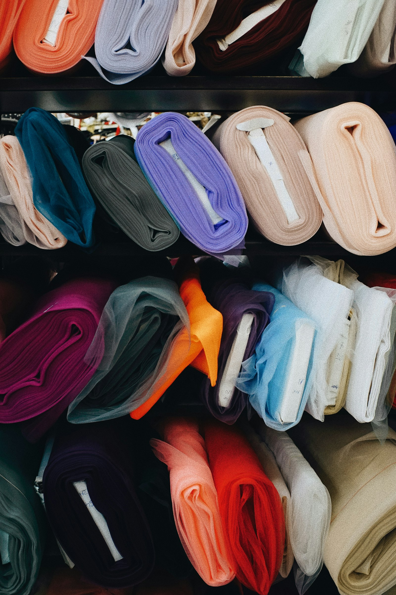
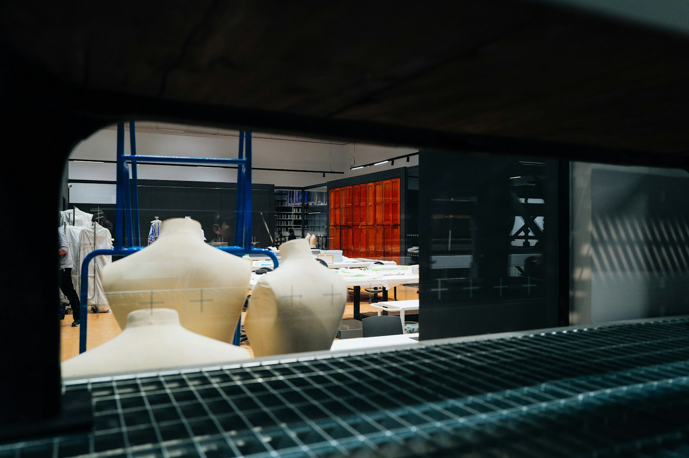

{{판매율 성과}}
컬렉션 구조 재편 후 시즌 판매율
{{지원 회사}} {{지원 직무}}
10년 동안 {{브랜드A}}, {{브랜드B}}, {{브랜드C}}에서 일하며 옷을 대하는 순서를 지켜왔습니다. 아이디어보다 먼저, 손에 쥔 원단의 무게를 확인합니다.
작업의 출발점
옷은 아이디어에서 시작되지 않고 손에 쥔 원단의 무게에서 시작된다고 믿습니다.
디자인의 완성도를 판단할 때 저는 룩북보다 피팅룸을 봅니다. 모델이 아닌 사람이 입고 팔을 들었을 때 등이 딸려 올라가는지, 앉았을 때 앞판이 뜨는지 확인합니다.
그 3초를 통과하지 못한 옷은
아무리 아름다워도 다시 패턴실로 돌려보냅니다.

만들어 온 것
제 옷에는 반복되는 특징이 있습니다. {{주력 소재·기법}}, 그리고 몸의 움직임을 따라 흐르도록 계산된 절개선입니다.
{{시그니처 아이템}}은 그 방식이 가장 선명하게 드러난 결과물이었고, 라인의 다음 기준이 됐습니다.

남겨 온 것
컨셉을 지키려면 컨셉 바깥의 언어를 할 줄 알아야 합니다.
벤더와는 원단 폭을 놓고, MD와는 프라이스 밴드를 놓고 같은 테이블에서 이야기합니다. 디자인을 깎지 않고 원가를 맞추는 방법은 디자인 바깥에도 있습니다.
{{판매율 성과}}
컬렉션 구조 재편 후 시즌 판매율
{{매출 성과}}
담당 라인 매출 성과
{{로스 절감 수치}}
패턴 단계 검토로 줄인 원단 로스

팀을 움직이는 기준
{{브랜드B}}에서 {{팀 규모}}명의 디자인팀을 이끌며 회의에서 “이건 좀 아닌 것 같다”는 말을 없앴습니다.
대신 소재·비율·원가·타겟 중 무엇이 어긋났는지 지목하게 했습니다. 리드의 취향은 물려줄 수 없지만, 판단의 기준은 물려줄 수 있기 때문입니다.

지원 동기
{{지원 회사}}의 {{관심 제품·라인}}을 매장에서 뒤집어 봤을 때 {{구체적 관찰}}을 발견했습니다.
원가 압박 속에서 누군가 끝까지 지킨 선택이라는 걸 알아볼 수 있었습니다. 브랜드의 태도는 그런 곳에 남습니다.
제가 채울 수 있는 자리
{{개선 여지}}
컨셉을 흐리지 않으면서 판매 폭을 넓히는 구조를 설계하는 것이 제가 다음 10년에 하고 싶은 일입니다.
다음 이야기